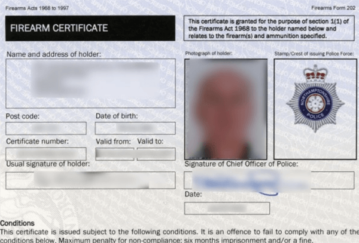

UK firearms law, as laid out in the Firearms Acts 1968, and soon to be updated to 2023, is some of the most controlled and cautious in the World. As a result we have amongst the lowest firearms injury and death rates from accidents and criminal activities anywhere.
While you will find plenty of firearms shooters that casually moan about the restrictions placed upon us, most will admit that they are a very good thing, and keep us and our families safer.
The law requires all new members of firearms clubs to serve a minimum six month probationary period, sufficient for the club committee members to determine that the new member is safe, follows safety instructions and is of good character.
After this, full Club membership may be granted, and a membership card issued, as well as a Safer Shooter Certificate (SSC), an essential card that allows you to shoot on NRA ranges.
If you are not already a firearms certificate holder, as a full Club member, you may apply to your local police firearms licensing department for a firearms certificate to own and keep a rifle. Part of this process will involve the police requiring a medical statement from your doctor.
You will need to install a compliant gun cabinet. Nobody but you may know where you keep the keys. 
Once all this is completed, the local firearms licensing officer will visit your home to interview you, double-checking that you are indeed of good character. They will also check your gun cabinet is suitable.
We will help and advise you throughout this process.